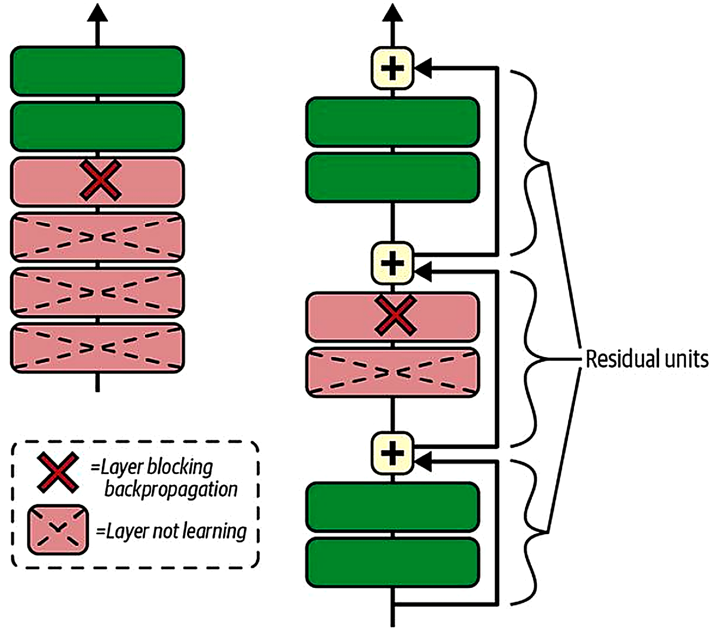
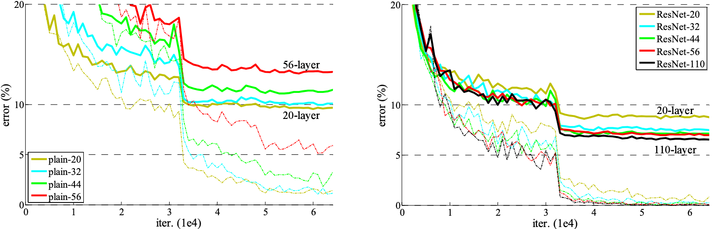
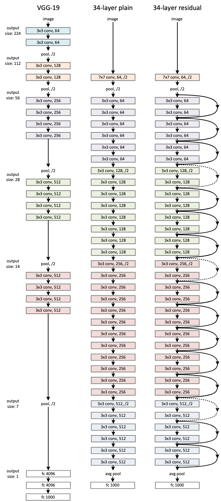
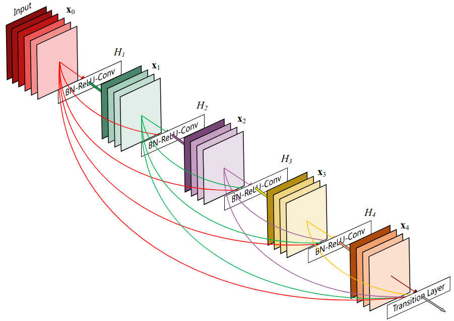
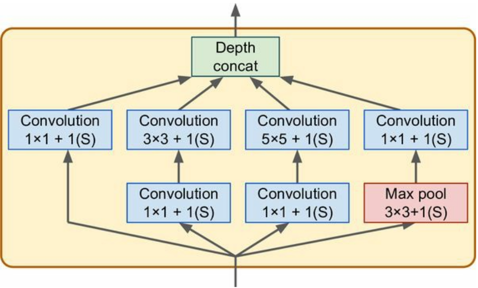
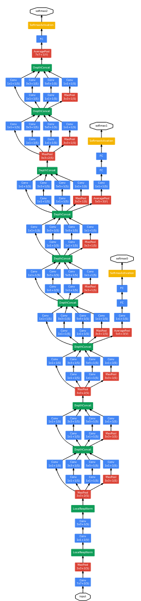
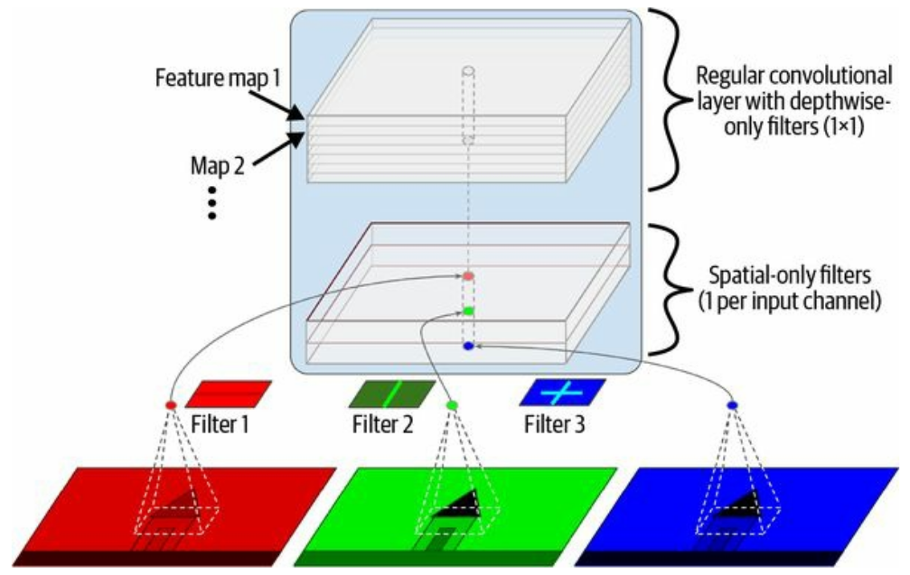

Let’s look at some noteworthy architectures for computer vision.
Residual connections
In deep learning we are computing composite functions: \[
y = f_3(f_2(f_1(x_1, x_2, \dots, x_n | \theta_1) | \theta_2) | \theta_3)
\]
These are prone to training problems like exploding or vanishing gradients.
We can stabilise training with good parameter initialisation, but going beyond ~16 Conv layers (the VGG models*) makes the model worse :/
With too many layers, the model gets dominated by noise.
* Simonyan, K., & Zisserman, A. (2014). Very deep convolutional networks for large-scale image recognition. arXiv:1409.1556.
A method for solving this is residual connections:
Residual connections
Implementing this branching and recombination can be done with Keras’ functional API:
inputs = keras.Input(shape=(32, 32, 3))x = layers.Conv2D(32, 3, activation="relu")(inputs)# Set aside the residualresidual = x# Conv blockx = layers.Conv2D(64, 3, activation="relu", padding="same")(x)x = layers.MaxPooling2D(2, padding="same")(x)# Conv layer with strides=2, so that the shapes matchresidual = layers.Conv2D(64, 1, strides=2)(residual)# Add the block output with the residual x = layers.add([x, residual])
If we need to this multiple times, we can write it in a
for loop
a function
or as a subclass of keras.layers.Layer
Residual networks
With residual connections in place, we can continue learning even if the gradients in a layer vanishes:

A. Geron: Hands-on Machine Learning with Scikit-Learn, Keras and TensorFlow
Residual networks
…which enables us to train networks with 100+ layers


He, K., Zhang, X., Ren, S., & Sun, J. (2016). Deep residual learning for image recognition. Proceedings of the IEEE conference on computer vision and pattern recognition.
Densely connected convolutional networks
How about adding skip connections (almost) everywhere?
Enter the DenseNet:

Huang, G., Liu, Z., Van Der Maaten, L., & Weinberger, K. Q. (2017). Densely connected convolutional networks. Proceedings of the IEEE conference on computer vision and pattern recognition.
Inception networks
We can also add width in addition to depth:
The inception module features parallel convolutional layers with different kernel size

Output is concatenated and passed on to the next module

GoogLeNet, 2014
Xception networks
The Xception (“extreme inception”) architecture relies on depthwise separable convolution layers

These layers are available as keras.layers.SeparableConv2D and can be used just like the regular Conv2D, often with increased performance
Beyond CNNs: Vision transformers
Can also use methods from LLMs on image input * (get back to this in Ch. 15):
However, pure ConvNets are still hard to beat **
* Dosovitskiy, A. (2020). An image is worth 16x16 words: Transformers for image recognition at scale. arXiv:2010.11929 ** Liu, Z., et al. (2022). A convnet for the 2020s. arxiv:2201.03545
keras.applications
The most popular computer vision architectures are available as pre-trained models in keras.applications.
These are excellent starting points for
feature extraction
fine-tuning
transfer learning
Note: The different models typically require specific preprocessing:
If you want to use
keras.applications.Xception()
you should process the input images with
keras.applications.xception.preprocess_input()
Feature extraction and fine-tuning
Ablation studies
Other computer vision tasks (next week)
Convolutional nets are great for other things than just classification:
Object detection: Localise (several) objects in an image
Oriented bounding boxes: Localise and estimate orientation of objects
Semantic segmentation: Classify each pixel onto an object
Instance segmentation: Draw a detailed outline around abjects
Pose estimation: Localise distinctive features or parts of an object